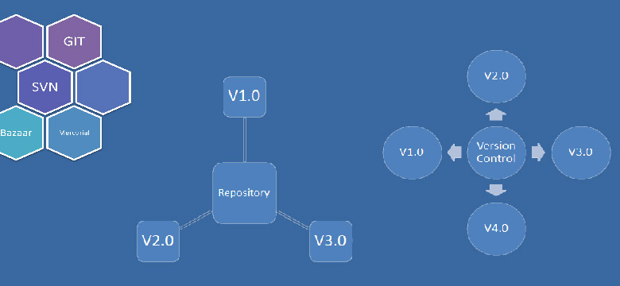

Version Control Systems (VCS) are a category of software tools that help a software team manage changes to source code over time. Version control software keeps track of every modification to the code in a special kind of database. If a mistake is made, developers can turn back the clock and compare earlier versions of the code to help fix the mistake while minimizing disruption to all team members.

Version control software is an essential part of the every-day of the modern software team's professional practices. Individual software developers who are accustomed to working with a capable version control system in their teams typically recognize the incredible value version control also gives them even on small solo projects. Once accustomed to the powerful benefits of version control systems, many developers wouldn't consider working without it even for non-software projects.
Developing software without using version control is risky, like not having backups. Version control can also enable developers to move faster and it allows software teams to preserve efficiency and agility as the team scales to include more developers. Developers may wish to compare today’s version of some software with yesterday’s version or last year’s version. Since version control systems keep track of every version of the software, this becomes a straightforward task. Knowing the what, who, and when of changes will help with comparing the performance of particular versions, working out when bugs were introduced (or fixed), and so on. Any problems that arose from a change can then be followed up by an examination of who made the change and the reasons they gave for making the change.
Version control has been closely studied and understood in the software engineering community for a long time. The solutions are stable, robust and well-supported. There are various systems suitable for small local teams and for large distributed teams, making them ideal for coordinating software development, and for mitigating differences in culture and timezone.